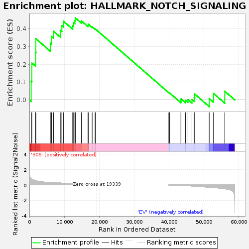
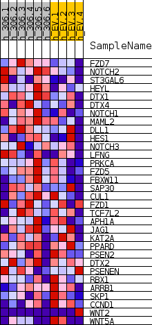
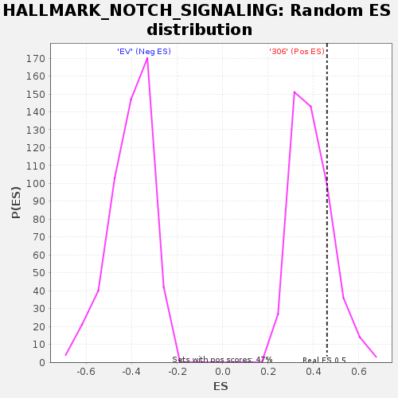

| | | Dataset | 306_EV_express.306_EV.cls#306_versus_EV |
| Phenotype | 306_EV.cls#306_versus_EV |
| Upregulated in class | 306 |
| GeneSet | HALLMARK_NOTCH_SIGNALING |
| Enrichment Score (ES) | 0.46001008 |
| Normalized Enrichment Score (NES) | 1.17584 |
| Nominal p-value | 0.205074 |
| FDR q-value | 0.8608053 |
| FWER p-Value | 0.915 |
Table: GSEA Results Summary

Fig 1: Enrichment plot: HALLMARK_NOTCH_SIGNALING
Profile of the Running ES Score & Positions of GeneSet Members on the Rank Ordered List
| SYMBOL | TITLE | RANK IN GENE LIST | RANK METRIC SCORE | RUNNING ES | CORE ENRICHMENT | | 1 | FZD7 | NNN | 512 | 0.815 | 0.1051 | Yes |
| 2 | NOTCH2 | NNN | 703 | 0.755 | 0.2072 | Yes |
| 3 | ST3GAL6 | NNN | 1782 | 0.563 | 0.2674 | Yes |
| 4 | HEYL | NNN | 1853 | 0.552 | 0.3434 | Yes |
| 5 | DTX1 | NNN | 5996 | 0.325 | 0.3183 | Yes |
| 6 | DTX4 | NNN | 6340 | 0.312 | 0.3560 | Yes |
| 7 | NOTCH1 | NNN | 6926 | 0.278 | 0.3848 | Yes |
| 8 | MAML2 | NNN | 8862 | 0.269 | 0.3894 | Yes |
| 9 | DLL1 | NNN | 9295 | 0.249 | 0.4168 | Yes |
| 10 | HES1 | NNN | 9753 | 0.232 | 0.4414 | Yes |
| 11 | NOTCH3 | NNN | 12399 | 0.148 | 0.4171 | Yes |
| 12 | LFNG | NNN | 12677 | 0.142 | 0.4322 | Yes |
| 13 | PRKCA | NNN | 13024 | 0.133 | 0.4449 | Yes |
| 14 | FZD5 | NNN | 13186 | 0.128 | 0.4600 | Yes |
| 15 | FBXW11 | NNN | 14913 | 0.087 | 0.4428 | No |
| 16 | SAP30 | NNN | 16787 | 0.056 | 0.4187 | No |
| 17 | CUL1 | NNN | 16883 | 0.053 | 0.4245 | No |
| 18 | FZD1 | NNN | 17990 | 0.031 | 0.4099 | No |
| 19 | TCF7L2 | NNN | 18827 | 0.013 | 0.3975 | No |
| 20 | APH1A | NNN | 18906 | 0.011 | 0.3978 | No |
| 21 | JAG1 | NNN | 39947 | -0.006 | 0.0408 | No |
| 22 | KAT2A | NNN | 40174 | -0.012 | 0.0387 | No |
| 23 | PPARD | NNN | 43404 | -0.080 | -0.0050 | No |
| 24 | PSEN2 | NNN | 43440 | -0.081 | 0.0057 | No |
| 25 | DTX2 | NNN | 44738 | -0.099 | -0.0026 | No |
| 26 | PSENEN | NNN | 45427 | -0.113 | 0.0015 | No |
| 27 | RBX1 | NNN | 46575 | -0.141 | 0.0016 | No |
| 28 | ARRB1 | NNN | 47215 | -0.158 | 0.0128 | No |
| 29 | SKP1 | NNN | 47369 | -0.163 | 0.0329 | No |
| 30 | CCND1 | NNN | 51519 | -0.323 | 0.0074 | No |
| 31 | WNT2 | NNN | 52742 | -0.357 | 0.0364 | No |
| 32 | WNT5A | NNN | 55963 | -0.480 | 0.0487 | No |
Table: GSEA details [plain text format]

Fig 2: HALLMARK_NOTCH_SIGNALING
Blue-Pink O' Gram in the Space of the Analyzed GeneSet

Fig 3: HALLMARK_NOTCH_SIGNALING: Random ES distribution
Gene set null distribution of ES for HALLMARK_NOTCH_SIGNALING